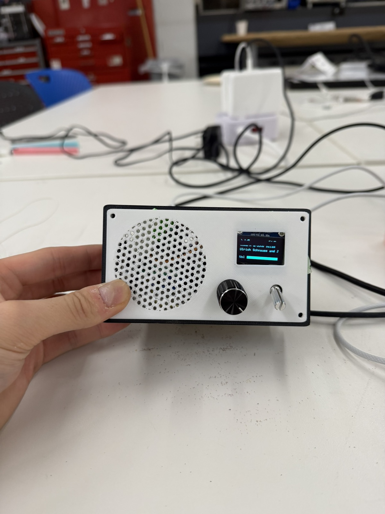
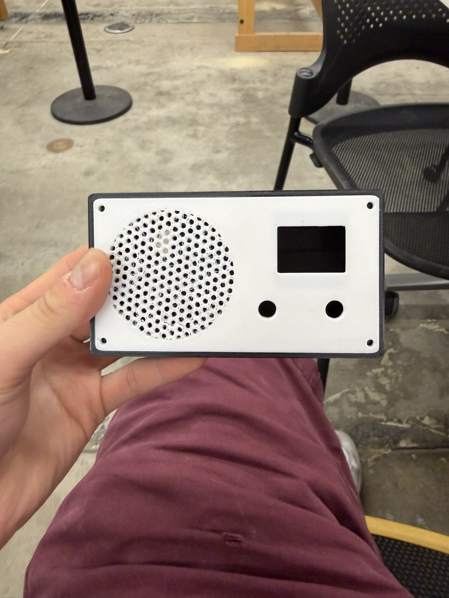
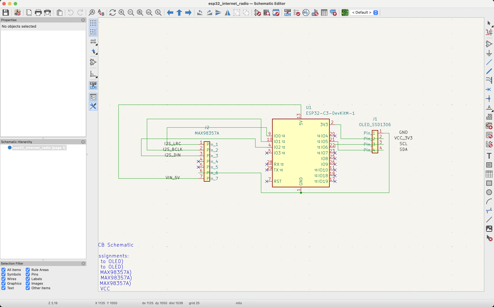
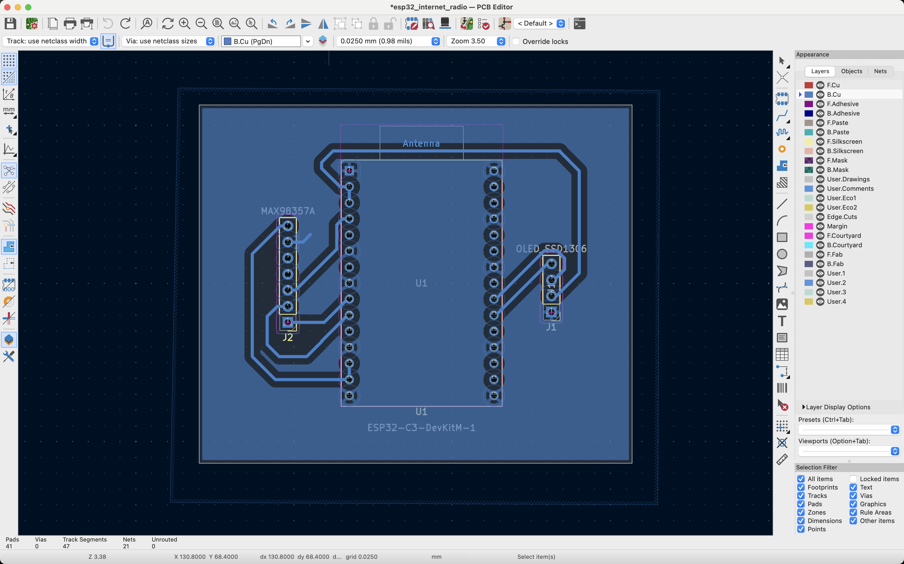
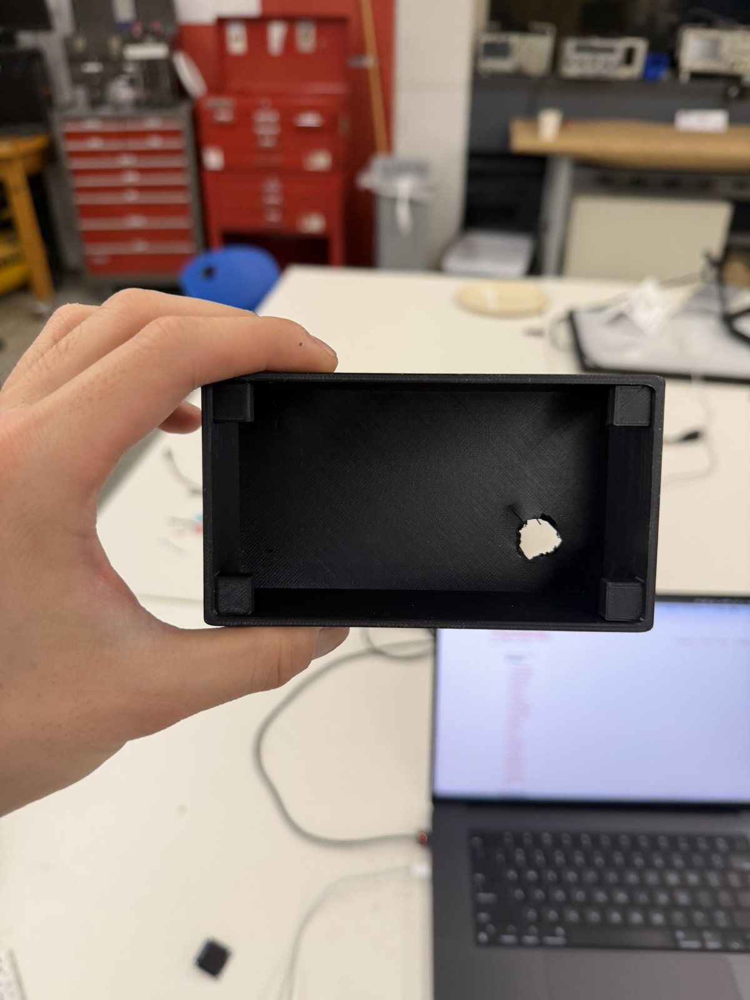
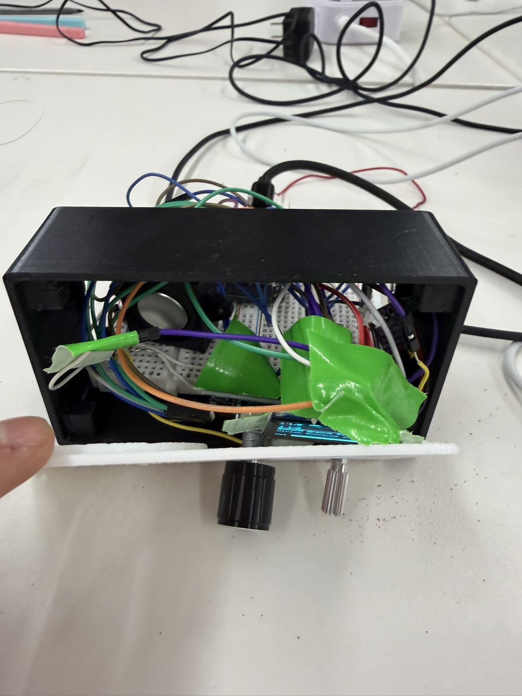
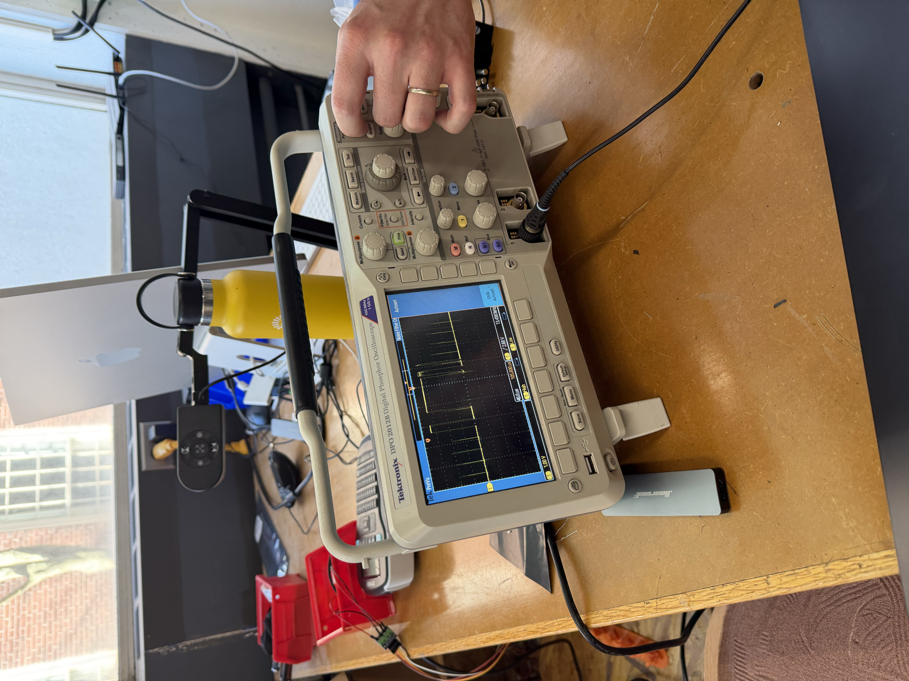

This week's assignment was to build an MVP and make a serious attempt at the hardest part of my final project. I decided to build a radio for my final project, and the part I was most concerned about was wiring all the components together, including the microcontroller, an OLED display, an audio amplifier, and the input controls. So this week I built a smaller version of the radio.

To begin, I put together a list of materials with the microcontroller and the input and output devices I'd need for the MVP.
It helped a lot that, from previous weeks, I already knew how to hook up a potentiometer (week 4) and an OLED display (week 6). That made wiring those parts much faster. The two new components were the audio amplifier and the rotary encoder. I learned to wire the amplifier from this audio amplifier tutorial, and the rotary encoder from this rotary encoder tutorial.
For my first attempt, I used a XIAO ESP32-C3 and it didn't work well. The audio output was extremely crackly and intermittent no matter how many times I tried. Bobby eventually informed me that audio doesn't run well on the XIAO and that I should switch to a larger dev board. The reason, I later learned, is that the XIAO ESP32-C3 is single-core. WiFi, audio, and the OLED are all competing for one CPU, which kept the audio buffer from staying smooth. After switching to the ESP32 DevKit V1, the audio worked properly. So a note to anyone planning to do audio: avoid the XIAO!
For the enclosure, I 3D printed the CAD design I'd already made back in week 5 for the 3D printing assignment, which included a radio enclosure, a radio knob, and a radio cover, all sized around the space needed for an OLED and a potentiometer.
After printing, I realized the box was probably too small to fit the whole breadboard. I was using two breadboards combined for the layout so that I could use both sides of pins, and I hadn't accounted for that when I designed the enclosure in week 5. When I talked to Bobby about the size conflict, he suggested I think about milling a custom PCB for the project instead of relying on a breadboard.


I started by looking back at how I'd wired up the radio, then recreated that wiring in KiCad's schematic editor. I traced each connection from the OLED, the amplifier, and the ESP32 to where it belonged. I put ground to ground, power to power, and each ESP32 pin to its corresponding component. I was told the exact placement of the wires in the schematic editor doesn't matter much, since KiCad's PCB editor is where you actually position the traces.
Since the board would be milled on the lab's PCB milling machine, I had to configure KiCad to match the machine's capabilities. In KiCad, under File → Board Setup, I set:
These clearances matter because traces that run too close together can let the electrical signals in them interfere with each other. Spacing the holes a bit farther apart also makes the pins easier to solder.


To mill the PCB, I started with a piece of copper and several pieces of double-sided tape, making sure the copper was as flat as possible on the milling machine's bed. This matters because the machine mills essentially only in X and Y and you don't want the Z height varying across the board.

I then followed Victor's excellent documentation on milling a PCB in the shop. In short, I used Gerber2Img and selected black and white before exporting my design as two PNGs, one for the cut path and one for the edge-cut outline. I swapped the bit in the machine for a V-bit using an Allen key, tightening it well so it couldn't fall out. Then, much like setting the origin on the ShopBot, I set the SRM-20's origin to the bottom-left corner and brought the bit down until it was just touching the material. Finally, I started the cut and made sure not to refresh the page while it was milling.


I ended up with a custom-milled PCB that I was really proud of. Honestly, though, the harder challenge was soldering the pins onto the board without any of them touching. After every solder joint, I had to check with a multimeter to make sure I hadn't created a solder bridge between pins, and I used a solder remover several times to separate pins that had bridged. I even had to re-mill the board after messing up my first attempt.

Milling your own PCB is a good proof of concept before ordering a custom board from a manufacturer but it's definitely not the easiest job. I really enjoyed learning how to use the PCB mill, and a big thank you to Victor for walking me through the entire process.
I also realized that I forgot to add a hole in the back of the 3D-printed enclosure for the USB power cable from my computer. For this MVP, I had to drill a rough hole in the back so the ESP32 could still plug in. This is another thing I need to fix in the final project by designing a proper cable opening into the enclosure from the start.

Finally, to hold the display, potentiometer, and rotary encoder in place inside the 3D print, I used tape, which is a very temporary solution. I asked Kassia for other ideas, and she suggested hot glue (more permanent) or screws. Since this is just an MVP that I'll likely replace, I went with tape for now and plan to switch to glue or screws for the final project.

With the wiring done and the enclosure printed, I moved on to the Arduino code. I ran into three main challenges along the way.
When I first wired up the potentiometer, it worked backwards and only used a limited slice of its range instead of the full sweep. I fixed both problems with the map() function, which remaps the potentiometer's raw values onto the volume range I wanted:
int v = map(constrain(raw, 150, 3900), 150, 3900, 21, 0);Working through this, I came to think the potentiometer isn't actually the best choice for volume. Because it's read on an analog pin, the signal is continuous and that often means less stable. Even when I wasn't touching the knob, the volume would sometimes flicker or drift on its own. For the final project I plan to use a rotary encoder instead, for more precise volume control.
I had an issue where the OLED wouldn't refresh right away when I changed the station or pressed play/pause. Watching the serial monitor, I figured out why. The display only refreshed when loop() came around to check it, but loop() was blocked inside the station-change routine for the entire duration of connecttohost(), which is 300+ ms. By the time loop() was free again, the refresh was already very late.
The fix was to call the display's draw() directly the instant anything changes the radio's state. That way the OLED gets first priority whenever the state changes and updates immediately as the user interacts with it.
Third, I sometimes couldn't tell whether the ESP32 was actually connected to the internet. When there was no audio, I needed to know whether it was an amplifier or speaker problem versus a WiFi connection problem. To make this visible, I added the WiFi signal strength to the OLED using WiFi.RSSI(), which reports the signal in dBm (decibels relative to one milliwatt) where higher (less negative) values mean a better signal. Mine hovered around −50 dBm, which is a strong connection to the makerspace router.
Here's the complete Arduino sketch that got the WiFi radio working:
#include <WiFi.h>
#include <Wire.h>
#include <Audio.h>
#include <Adafruit_GFX.h>
#include <Adafruit_SSD1306.h>
const char* WIFI_SSID = "";
const char* WIFI_PASS = "";
#define POT_PIN 34
#define ENC_A 32
#define ENC_B 33
#define ENC_BTN 23
#define I2C_SDA 21
#define I2C_SCL 22
#define I2S_BCLK 27
#define I2S_LRC 26
#define I2S_DOUT 25
#define SCREEN_W 128
#define SCREEN_H 64
struct Station { const char* name; const char* url; };
const Station STATIONS[] = {
{ "SomaFM Groove Salad", "http://ice1.somafm.com/groovesalad-128-mp3" },
{ "SomaFM Indie Pop", "http://ice1.somafm.com/indiepop-128-mp3" },
{ "Radio Paradise Main", "http://stream.radioparadise.com/mp3-128" },
{ "KEXP Seattle", "http://live-mp3-128.kexp.org/kexp128.mp3" },
{ "BBC World Service", "http://stream.live.vc.bbcmedia.co.uk/bbc_world_service" }
};
const int NUM_STATIONS = sizeof(STATIONS) / sizeof(STATIONS[0]);
// polled, debounced rotary encoder
class RotaryEncoder {
public:
RotaryEncoder(int pinA, int pinB, unsigned long debounceMs)
: _pinA(pinA), _pinB(pinB), _debounceMs(debounceMs),
_lastA(HIGH), _lastEdgeMs(0), _count(0), _reported(0) {}
void begin() {
pinMode(_pinA, INPUT_PULLUP);
pinMode(_pinB, INPUT_PULLUP);
_lastA = digitalRead(_pinA);
}
// call every loop
void poll() {
int a = digitalRead(_pinA);
if (_lastA == HIGH && a == LOW) {
unsigned long now = millis();
if (now - _lastEdgeMs > _debounceMs) {
_lastEdgeMs = now;
if (digitalRead(_pinB) == LOW) _count--;
else _count++;
}
}
_lastA = a;
}
// net detents since the previous call
long delta() {
long d = _count - _reported;
_reported = _count;
return d;
}
private:
int _pinA, _pinB;
unsigned long _debounceMs;
int _lastA;
unsigned long _lastEdgeMs;
long _count, _reported;
};
// audio, display, encoder and all radio state
class Radio {
public:
Radio()
: _display(SCREEN_W, SCREEN_H, &Wire, -1),
_encoder(ENC_A, ENC_B, 30),
_state(CONNECTING), _station(0), _volume(10), _playing(true),
_lastPotMs(0), _lastBtnMs(0), _lastDrawMs(0) {
_title[0] = '\0';
}
void begin() {
pinMode(ENC_BTN, INPUT_PULLUP);
_encoder.begin();
Wire.begin(I2C_SDA, I2C_SCL);
Wire.setClock(400000);
_display.begin(SSD1306_SWITCHCAPVCC, 0x3C);
showMessage("Connecting WiFi...");
WiFi.mode(WIFI_STA);
WiFi.begin(WIFI_SSID, WIFI_PASS); // returns immediately
}
// call every loop
void update() {
if (_state == CONNECTING) {
if (WiFi.status() == WL_CONNECTED) {
_audio.setPinout(I2S_BCLK, I2S_LRC, I2S_DOUT);
_audio.setVolume(_volume);
startStation(_station);
_state = RUNNING;
}
return;
}
_audio.loop();
_encoder.poll();
serviceVolume();
long d = _encoder.delta();
if (d != 0) changeStation(d);
serviceButton();
if (millis() - _lastDrawMs > 500) draw();
}
void onStreamTitle(const char* info) {
strncpy(_title, info, sizeof(_title) - 1);
_title[sizeof(_title) - 1] = '\0';
draw();
}
private:
enum State { CONNECTING, RUNNING };
void changeStation(int steps) {
int n = NUM_STATIONS;
startStation(((_station + steps) % n + n) % n);
}
void startStation(int idx) {
_station = idx;
_audio.stopSong();
_title[0] = '\0';
_playing = true;
draw(); // redo before the slow connect
_audio.connecttohost(STATIONS[idx].url);
}
void togglePlay() {
_playing = !_playing;
draw();
if (_playing) _audio.connecttohost(STATIONS[_station].url);
else _audio.stopSong();
}
// volume potentiometer, sampled every 80ms
void serviceVolume() {
if (millis() - _lastPotMs < 80) return;
_lastPotMs = millis();
int raw = analogRead(POT_PIN);
int v = map(constrain(raw, 150, 3900), 150, 3900, 21, 0);
if (v != _volume) {
_volume = v;
_audio.setVolume(_volume);
draw();
}
}
// play/pause button
void serviceButton() {
if (digitalRead(ENC_BTN) == LOW && millis() - _lastBtnMs > 300) {
_lastBtnMs = millis();
togglePlay();
}
}
void showMessage(const char* msg) {
_display.clearDisplay();
_display.setTextColor(SSD1306_WHITE);
_display.setTextSize(1);
_display.setCursor(0, 0);
_display.println("WiFi Radio");
_display.setCursor(0, 20);
_display.println(msg);
_display.display();
}
void draw() {
_lastDrawMs = millis();
_display.clearDisplay();
_display.setTextSize(1);
_display.setTextColor(SSD1306_WHITE);
// top bar: play state, station index, WiFi signal
_display.setCursor(0, 0);
_display.print(_playing ? "> " : "|| ");
_display.print(_station + 1);
_display.print("/");
_display.print(NUM_STATIONS);
_display.setCursor(86, 0);
_display.print(WiFi.RSSI());
_display.print("dB");
_display.drawLine(0, 10, 128, 10, SSD1306_WHITE);
// station name
_display.setCursor(0, 14);
_display.print(clip(STATIONS[_station].name));
// now-playing track
if (_title[0]) {
_display.setCursor(0, 28);
_display.print(clip(_title));
}
// volume bar
_display.setCursor(0, 52);
_display.print("Vol");
_display.drawRect(24, 52, 100, 8, SSD1306_WHITE);
_display.fillRect(24, 52, (_volume * 100) / 21, 8, SSD1306_WHITE);
_display.display();
}
// truncate to one display line
const char* clip(const char* s) {
static char buf[22];
strncpy(buf, s, 21);
buf[21] = '\0';
return buf;
}
Adafruit_SSD1306 _display;
Audio _audio;
RotaryEncoder _encoder;
State _state;
int _station;
int _volume;
bool _playing;
char _title[64];
unsigned long _lastPotMs, _lastBtnMs, _lastDrawMs;
};
Radio radio;
// Audio library callbacks
void audio_showstreamtitle(const char* info) { radio.onStreamTitle(info); }
void audio_info(const char* info) { Serial.print("info: "); Serial.println(info); }
void setup() {
Serial.begin(115200);
radio.begin();
}
void loop() {
radio.update();
}To use the radio, a user can fill in their WiFi network's SSID and password at the top of the sketch and upload it to the ESP32. They can also edit the STATIONS list in the code to add whatever stations they want.
I already had some experience with the oscilloscope from my Physics 19 lab last semester, where I got comfortable analyzing analog and digital signals. Here, I wanted to look at the three I2S signals the radio uses to send audio from the ESP32 to the MAX98357A amplifier.
I started with the LRCLK, GPIO 26 pin, which is a word clock that tells the amplifier when a left channel sample ends and a right channel one begins. This keeps the two stereo channels aligned. By probing the GPIO 26 pin, I measured a frequency of about 44 kHz with a period of roughly 22 µs. It was a fixed and regular signal that just alternated between high and low (no fluctuations or irregular behavior).

Next I measured the BCLK, GPIO 27 bit clock, which shifts the individual audio bits into the amplifier. On GPIO 27 I measured a frequency of about 1.5 MHz and a period of roughly 0.7 µs. This was a similar-looking wave to the word clock.

I forgot to measure a speaker pin, but I would have probed GPIO 25, which carries the actual audio sample bits. I'd expect this one not to be a fixed wave, but something more irregular, since an audio waveform is itself irregular.
So the first two lines run on fixed clocks, while the data line probably doesn't. One thing I found interesting was that the bit clock on GPIO 27 didn't change when I switched stations or adjusted the volume, but the word clock on GPIO 26 did change with a different audio stream. I'm not sure why, but I hope to figure out eventually.
Overall, I'm really proud that I got a fully functioning internet radio working for my MVP. Eventually, for the final project, I want a version of the radio that doesn't depend on a WiFi connection at all. I'm currently considering Bluetooth and FM radio (using a dedicated FM module) as ways to do that.
A few improvements I'd like to make for the final project: